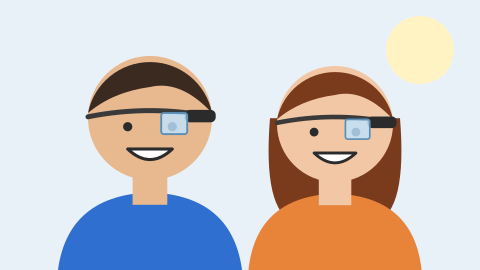

Tecnologia › Inovações
Saiba tudo sobre o Google Glass
por Pedro Henrique
Atualizado em
Nota de revisão (2026): esta matéria descreve o Glass como ele era em 2013, ainda um protótipo, e é mantida como exercício do curso. O que aconteceu depois: a edição Explorer foi vendida a desenvolvedores a partir de 2013 por US$ 1.500, chegou ao público dos Estados Unidos em 2014 e teve as vendas encerradas em janeiro de 2015. O Google ainda lançou versões corporativas (Enterprise Edition, em 2017 e 2019) e descontinuou o produto em 2023.
O que é
O Google Glass é um acessório em forma de óculos que possibilita a interação dos usuários com diversos conteúdos em realidade aumentada. Também chamado de Project Glass (abre em nova aba), o eletrônico é capaz de tirar fotos a partir de comandos de voz, enviar mensagens instantâneas e realizar videoconferências. Quando foi anunciado, seu lançamento estava previsto para 2014 e seu preço estimado era de US$ 1,5 mil. Em 2013 o Google Glass ainda estava em fase de testes e já possuía um vídeo totalmente gravado com o dispositivo. Além disso, a companhia de buscas havia registrado patentes antifurto e de desbloqueio de tela para o acessório.

Data de lançamento
Em 2013 ainda não havia uma data específica e oficial para o lançamento do dispositivo. A expectativa era de demonstrações a partir daquele ano e de chegada às lojas em, pelo menos, 2014, o que se confirmou: a edição Explorer foi aberta ao público dos Estados Unidos em maio de 2014.
Especificações Técnicas
| Tela | Resolução equivalente a tela de 25" |
|---|---|
| Câmera | 5 MP para fotos |
| 720p para vídeos | |
| Conectividade | Wi-Fi |
| Bluetooth | |
| Memória Interna | 12 GB |
Como funciona
De acordo com fontes próximas do Google, os óculos contam com uma pequena tela de LCD ou AMOLED na parte superior e em frente aos olhos do usuário. Com o uso de uma câmera e GPS, você pode se situar, assim como selecionar opções com o movimento da cabeça.
O que você pode fazer com o Google Glass
O vídeo de divulgação do Google mostra que você pode se transformar em uma espécie de “super-humano”, já que o aparelho pode indicar a quantos metros você está de seu destino, se o metrô está aberto ou fechado, mostrar o clima, agenda e até mesmo permitir que você marque encontros apenas com comandos de voz.
Simulador Interativo do Google Glass
Experimente o Google Glass em 360°, explore a interface óptica do prisma Heads-Up Display (HUD) e teste comandos de voz em tempo real através do microfone ou dos botões interativos.
Modelo 3D do Glass (Rotação 360°)
Prisma Heads-Up Display (HUD)
Diga "OK Glass, tirar foto" ou clique nos botões abaixo: